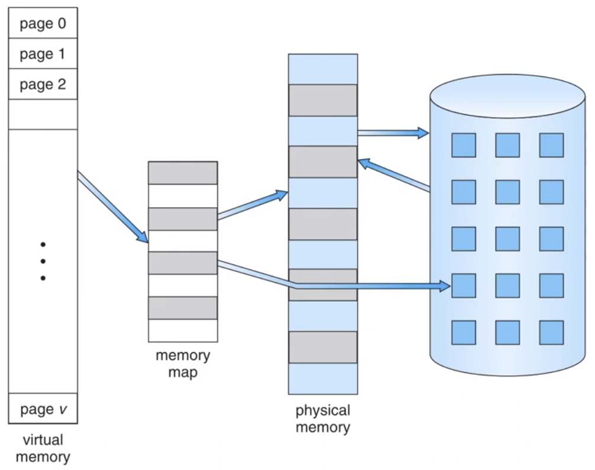

Disciplinas
-
SISTEMAS COMPUTACIONAIS. Concluído
Materiais
Vídeo 1 - 5.7 - Arquitetura de Computadores - Memória Virtual - Uma Breve Revisão. sendProf° ministrante: Emílio Francesquini (UFABC).
Conteúdo
Memória Virtual - Uma Breve Revisão.
Fundamentos.
- O código precisa estar na memória para ser executado, mas o programa completo raramente é usado
- Código de erro, rotinas incomuns, grandes estruturas de dados
- Todo o código do programa não é necessário ao mesmo tempo
- Considere a capacidade de executar programas parcialmente carregados
- Programa não seriam mais limitados pelos por limites físicos da memória RAM
- Cada programa precisa de menos memória durante a execução: assim mais programas podem executar ao mesmo tempo
- Maior utilização da CPU e taxa de transferência sem aumento no tempo de resposta ou no tempo de retorno
- Menos E/S necessário para carregar ou trocar programas em memória: logo cada programa do usuário é executado mais rapidamente
Memória virtual.
- Memória virtual - separação da memória lógica do usuário da memória física
- Apenas parte do programa precisa estar na memória para execução
- O espaço de endereçamento lógico pode, portanto, ser muito maior do que espaço de endereçamento físico
- Permite que os espaços de endereço sejam compartilhados por vários processos
- Permite uma criação de processo mais eficiente
- Mais programas em execução simultaneamente
- Menos E/S necessário para carregar ou trocar processos
- Memória virtual pode ser implementada via:
- Paginação por demanda
- Segmentação por demanda
Memória virtual que é maior que a memória física.
Espaço de endereço virtual.
- Geralmente projeta-se o espaço de endereço lógico da pilha para começar no endereço lógico máximo e crescer "para baixo enquanto heap cresce "para cima"
- Maximiza o uso do espaço de endereçamento
- Espaço de endereço não utilizado entre os dois é buraco
- Nenhuma memória física necessária até a pilha ou heap crescerem até uma nova página
- Habilita espaços de endereços esparsos com buracos deixados para crescimento, bibliotecas ligadas dinamicamente, etc.
- Bibliotecas compartilhadas via mapeamento no espaço de endereçamento virtual
- Memória compartilhada com páginas mapeadas em modo de leitura-escrita no espaço de endereço virtual
- As páginas podem ser compartilhadas durante o fork(), acelerando a criação de processos
Biblioteca compartilhada usando memória virtual.